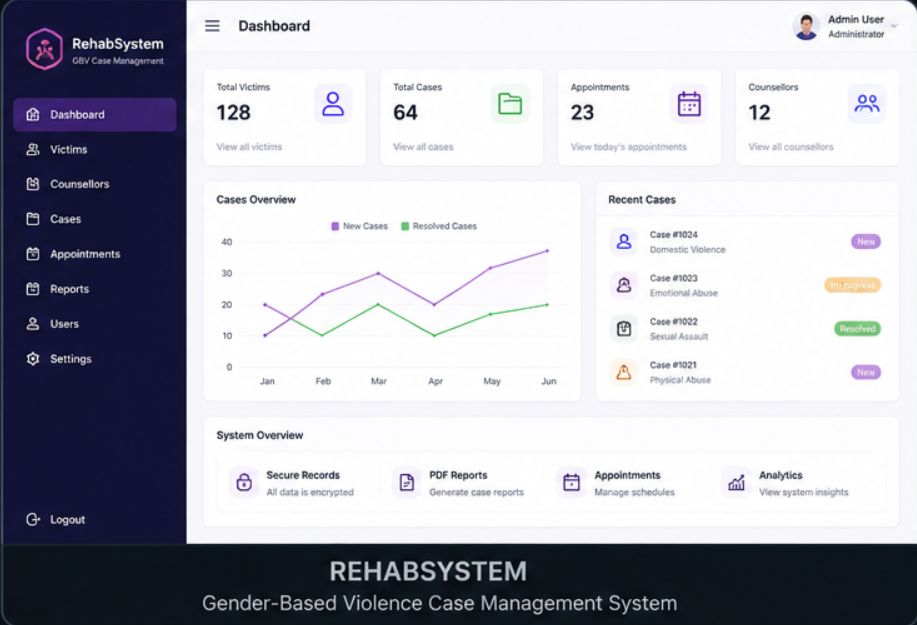
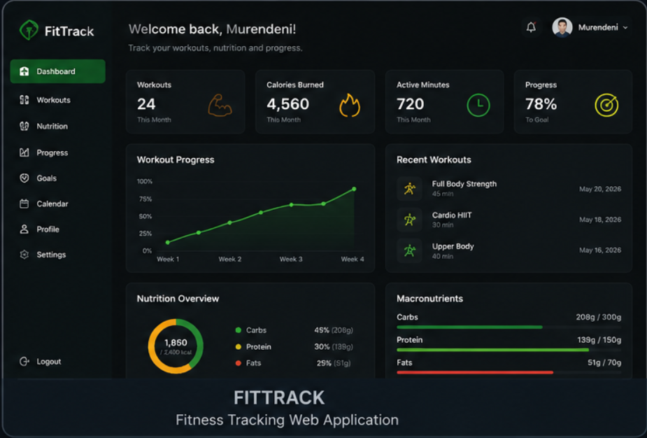
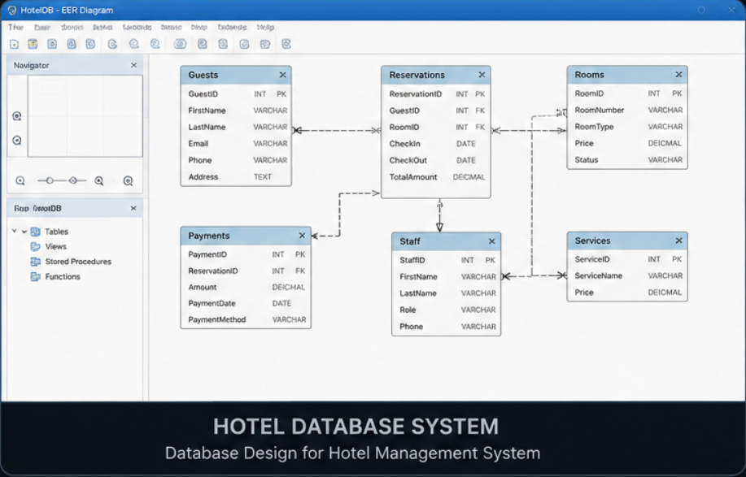
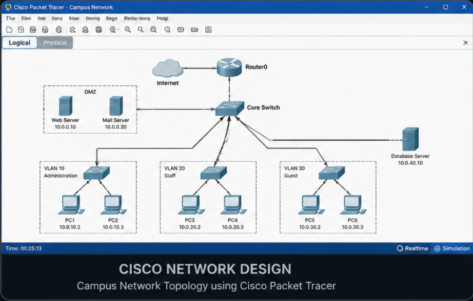
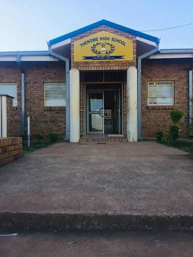
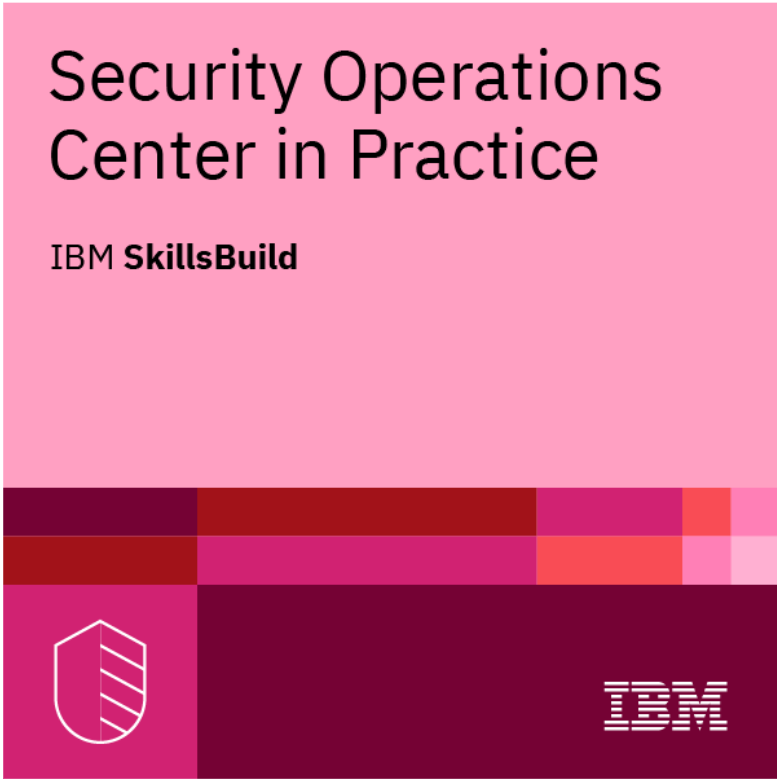

👋 Hi, I'm
Final-year Information Technology student at North-West University passionate about Software Engineering, AI, Full-Stack Development and building real-world software solutions.
I am Murendeni Gundo Malima, a final-year BSc Information Technology student at North-West University with a strong interest in Software Engineering, Artificial Intelligence and modern Full-Stack Web Development. I enjoy creating software that solves real-world problems and continuously challenges me to become a better developer.
Throughout my studies I have developed applications using Python, Java, C#, SQL, HTML, CSS and JavaScript. My projects range from desktop applications and database systems to networking solutions and responsive web applications. Every project has strengthened my analytical thinking, problem-solving ability and software development skills.
As a Student Assistant for both CMPG222 (Data Analytics) and STTN122 (Statistics), I have gained valuable experience supporting students, assisting lecturers, marking assessments, invigilating practical tests and communicating technical concepts clearly. These responsibilities have helped me develop leadership, accountability and professionalism.
I am naturally curious, disciplined and always eager to learn. I enjoy working with others, adapting to new technologies and taking on challenging projects that push me beyond my comfort zone. My goal is to begin my career as a Software Engineer, contribute to meaningful products and continue growing into a well-rounded technology professional.
Limpopo, South Africa
North-West University
Open to Internship Opportunities
Software Engineering
Teamwork & Leadership
Time Management
Problem Solving
Continuous Learning
Academic leadership, teaching assistance and student support experience.
Backend Development • Automation • Data Analysis
OOP • GUI • Problem Solving
Databases • Queries • Data Management
Responsive Design • Modern UI
DOM • Interactive Websites
Version Control • Collaboration
A collection of software engineering, database, networking and mobile application projects developed during my studies at North-West University.

A desktop application built using C#, Windows Forms and SQL Server to manage victim records, appointments, counsellor assignments and automatically generate PDF reports.

A .NET MAUI mobile application developed using the MVVM architecture, enabling users to monitor workouts, fitness goals and progress.

Designed and implemented a fully normalized Oracle SQL database supporting guest management, bookings, employee records, catering services and payments.

Designed and configured a secure enterprise network using Cisco Packet Tracer with VLANs, routing, switching, DHCP and inter-department communication.
Currently pursuing a Bachelor of Science in Information Technology, developing strong skills in Software Engineering, Data Analytics, Database Systems, Networking, Artificial Intelligence and Full-Stack Web Development through academic projects and practical experience.

Successfully completed the National Senior Certificate with strong academic performance in Mathematics, Physical Sciences, Accounting, Life Sciences and Tshivenda Home Language, building a solid foundation for a career in Information Technology.
Industry certification earned through continuous learning and academic development, demonstrating practical knowledge of cybersecurity fundamentals and secure computing.

Successfully completed an IBM SkillsBuild cybersecurity course as part of the Information Security module at North-West University. The certification strengthened my understanding of cybersecurity, information security principles, online safety and digital threat awareness.
IBM SkillsBuild
Cybersecurity
Completed ✓
I'm currently looking for internship and graduate opportunities. Feel free to reach out!